MENU
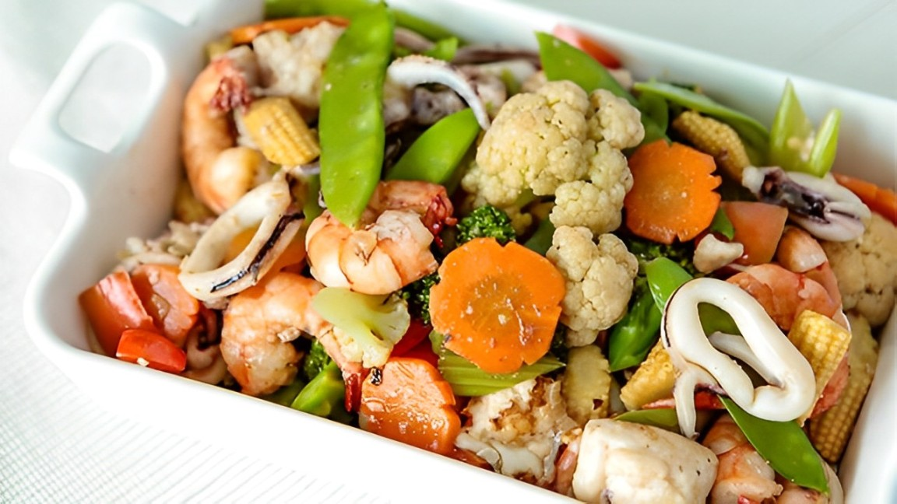
Ingredients:
a. 1 carrot
b. 4 cloves garlic
c. 1 onion
d. 1/4 cup dried shrimp
...
Chop SueySee Recipe
Tasty mix of veggies, meat, and sauce, perfect with rice or noodles.

Ingredients:
a. Squash (kalabasa), cubed
b. Coconut milk
c. Shrimp or dried fish
d. Garlic, onions, and ginger
...
Ginataang KalabasaSee Recipe
Creamy mix of squash and coconut milk with savory flavors.
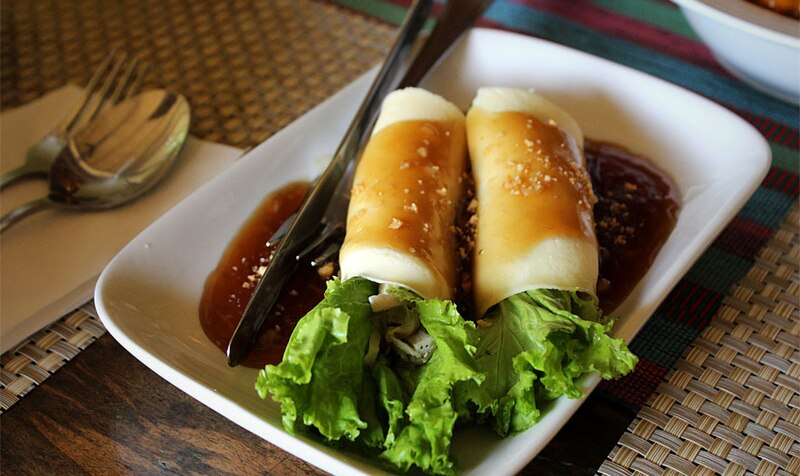
Ingredients:
a. Wrapper (fresh lumpia skin)
b. Mixed vegetables (carrots, cabbage, beans)
c. Garlic, minced
...
Lumpiang UbodSee Recipe
Fresh spring roll with heart of palm and savory filling.
Ingredients:
a. Wrapper (fresh lumpia skin)
b. Mixed vegetables (carrots, cabbage, beans)
c. Garlic, minced
d. Onion, chopped
...
Lumpiang Buko-TogueSee Recipe
Crispy spring roll filled with coconut and mung bean sprouts.

Ingredients:
a. Eggplants (talong)
b. Eggs
c. Salt
d. Cooking oil
...
Tinortang TalongSee Recipe
Eggplant omelette with a smoky, savory flavor.
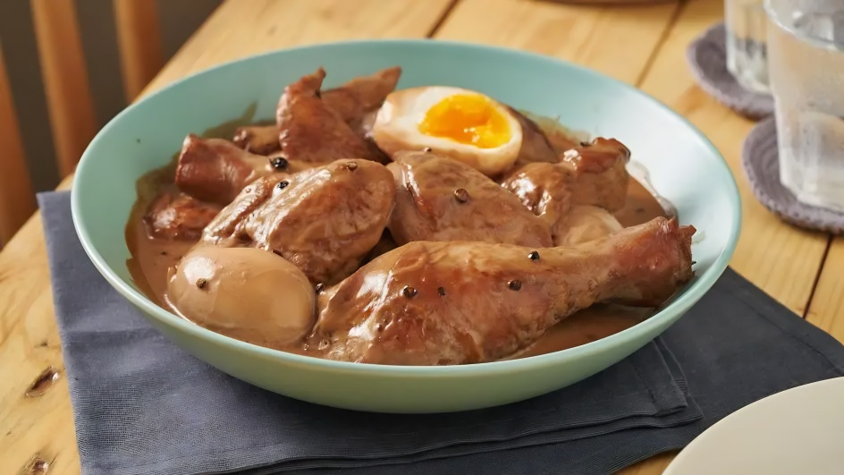
Ingredients:
a. Chicken
b. Soy sauce
c. Vinegar
d. Garlic
...
Adobong ManokSee Recipe
Rich blend of tender chicken, soy sauce, vinegar, garlic, and spices.
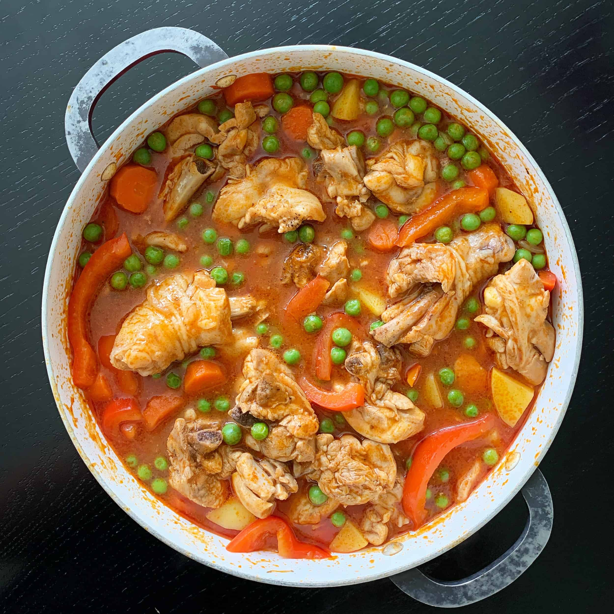
Ingredients:
a. Chicken
b. Tomato sauce
c. Potatoes
d. Carrots
...
AfritadaSee Recipe
Savory mix of chicken, tomato sauce, potatoes, carrots, and bell peppers.

Ingredients:
a. Chicken
b. Fresh tomatoes
c. Garlic
d. Onions
...
Kinamatisang ManokSee Recipe
Flavorful combination of chicken, fresh tomatoes, ginger, and leafy greens.
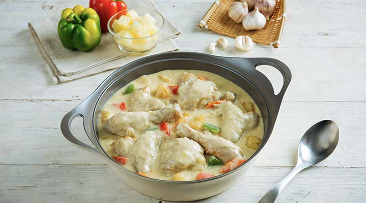
Ingredients:
a. Chicken
b. Pineapple chunks
c. Pineapple juice
d. Bell peppers
...
Pininyahang ManokSee Recipe
Creamy chicken stew with pineapple, carrots, and bell peppers.

Ingredients:
a. Chicken
b. Ginger
c. Green papaya
d. Malunggay leaves
...
Tinolang ManokSee Recipe
Light chicken soup with ginger, green papaya, and leafy greens.
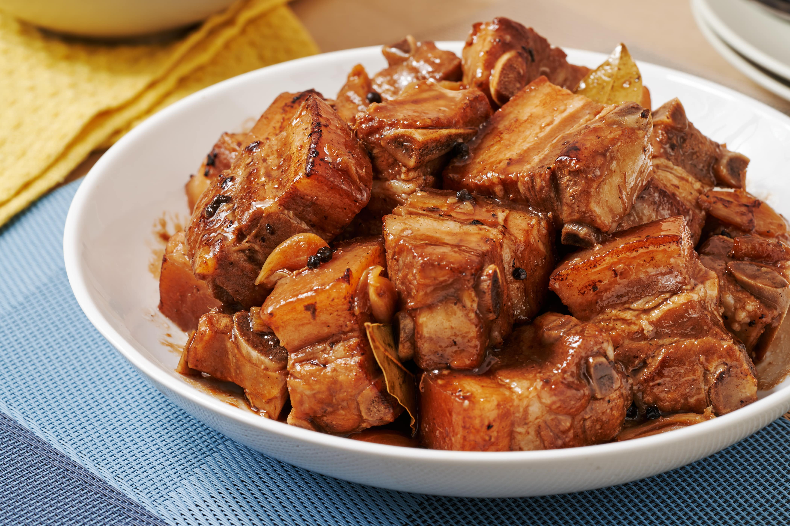
Ingredients:
a. Pork shoulder
b. Soy sauce
c. Vinegar
d. Garlic
...
Asadong BaboySee Recipe
Savory braised pork with soy sauce, vinegar, garlic, and spices.

Ingredients:
a. Ground pork
b. Carrots
c. Garlic
d. Onion
...
Lumpiang ShanghaiSee Recipe
Crispy spring rolls filled with seasoned ground pork, vegetables, and spices.
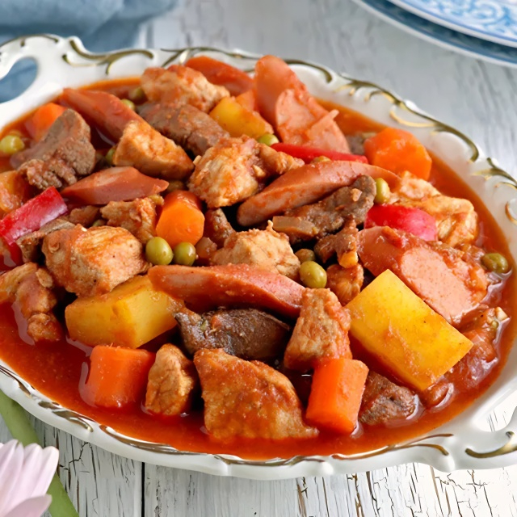
Ingredients:
a. Pork cubes
b. Liver
c. Potatoes
d. Carrots
...
MenudoSee Recipe
Hearty stew of pork, liver, potatoes, carrots, and tomato sauce.
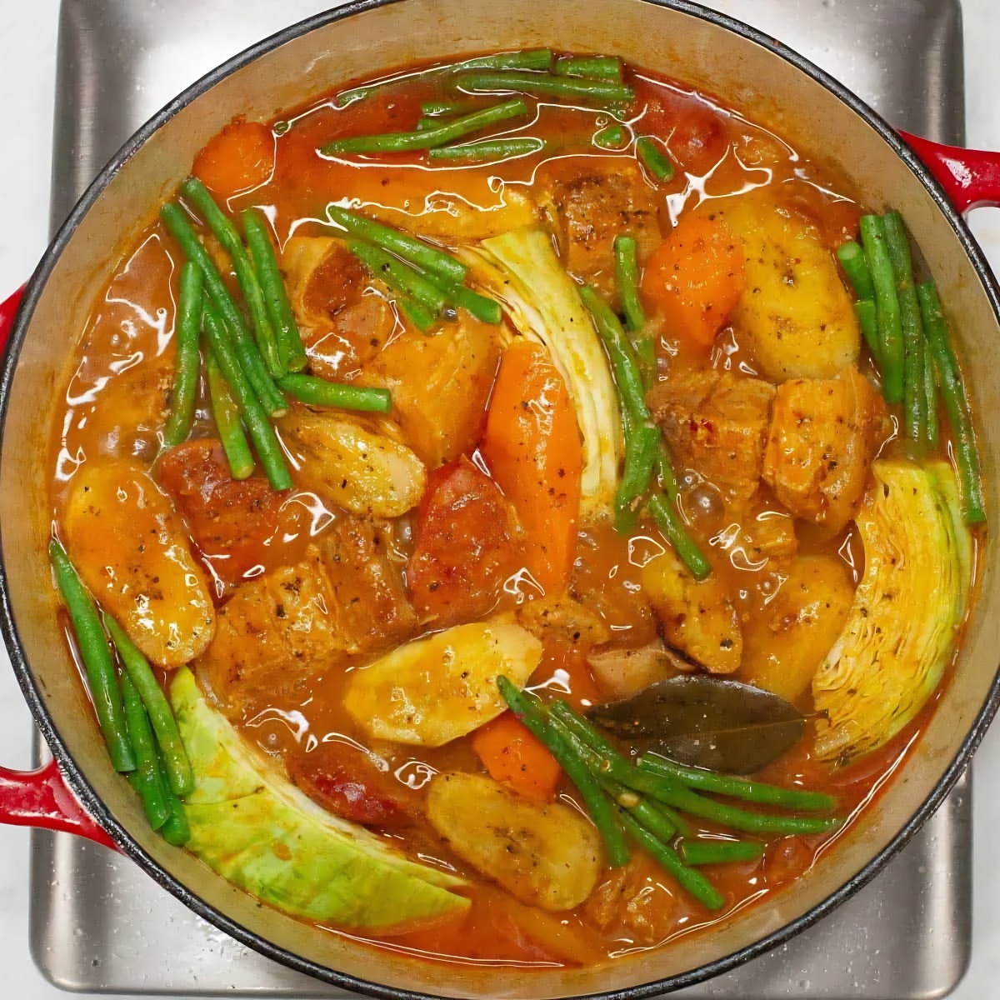
Ingredients:
a. Pork belly
b. Ripe saba bananas
c. Cabbage
d. Potatoes
...
PocheroSee Recipe
Comforting stew of pork, bananas, potatoes, cabbage, and tomato-based broth.

Ingredients:
a. Pork belly
b. Tamarind soup mix
c. Water spinach
d. Radish
...
Sinigang BaboySee Recipe
Tangy soup with pork, tamarind broth, and assorted vegetables.
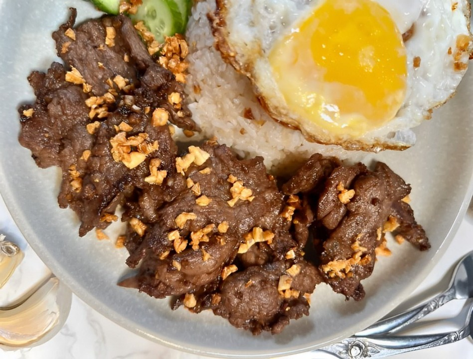
Ingredients:
a. 1/2 kg beef (thinly sliced)
b. 1/4 cup soy sauce
c. 2 tablespoons vinegar
d. 1 tablespoon sugar
...
Beef TapaSee Recipe
Crispy, marinated beef strips with a savory, slightly sweet flavor.

Ingredients:
a. 1/2 kg beef sirloin (sliced thinly)
b. 1/2 cup soy sauce
c. 1/4 cup calamansi juice
d. Onions (sliced into rings)
...
Beef SteakSee Recipe
Tender beef slices cooked in a savory soy sauce and onion gravy.

Ingredients:
a. 1 kg beef (cut into chunks)
b. 1 can tomato sauce
c. 1 cup liver spread
d. Carrots and potatoes (cubed)
...
Beef CalderetaSee Recipe
Rich stew of beef, potatoes, carrots, bell peppers, and tomato-based sauce.
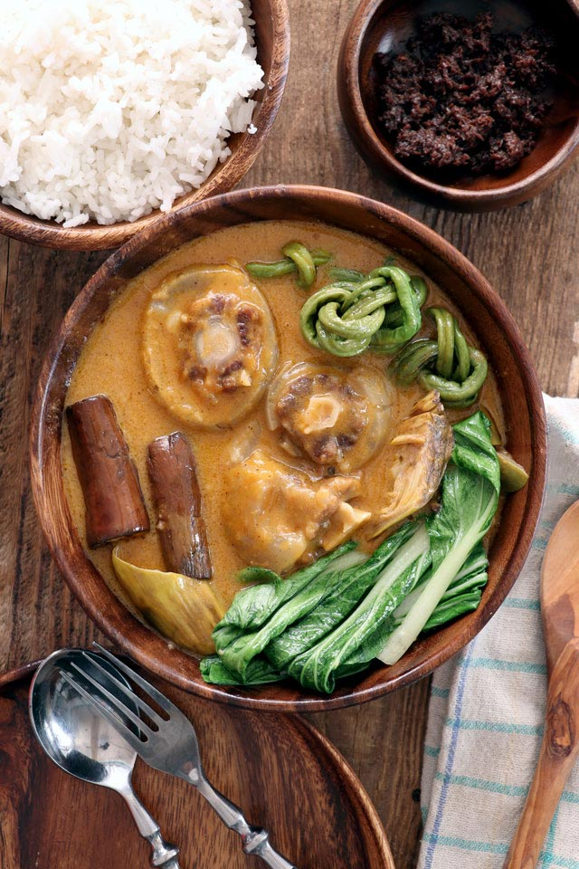
Ingredients:
a. 1 kg oxtail (or beef shank, tripe)
b. 2 cups peanut butter
c. 1/2 cup toasted rice flour
d. 2 tablespoons annatto oil
...
Kare-KareSee Recipe
Creamy peanut sauce stew with oxtail, tripe, vegetables, and bagoong on the side.

Ingredients:
a. 1 kg beef shank
b. Corn on the cob (cut into pieces)
c. Cabbage
d. Pechay (bok choy)
...
Beef BulaloSee Recipe
Savory beef shank and bone marrow soup with corn, vegetables, and a rich broth.
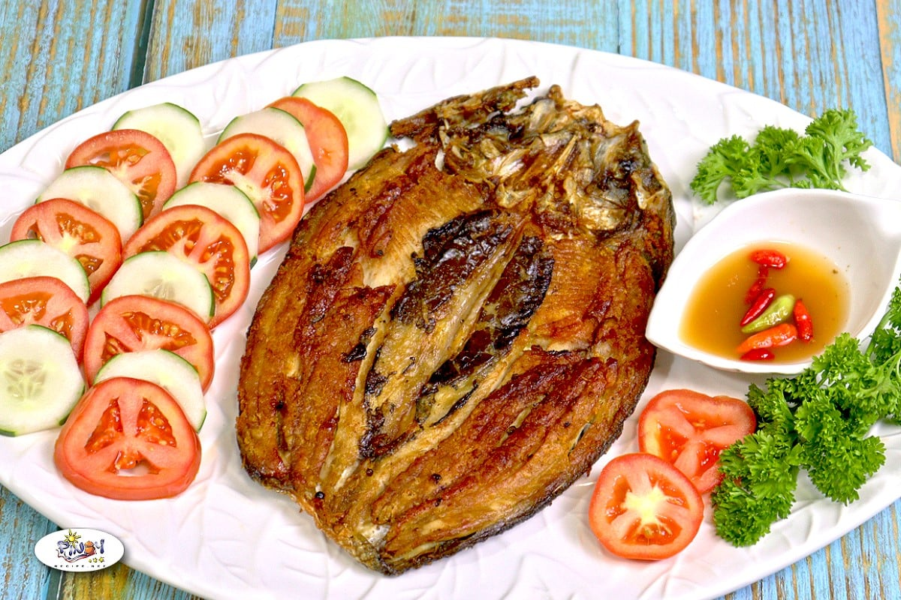
Ingredients:
a. 1 medium milkfish, butterflied
b. 1/2 cup vinegar
c. 4 cloves garlic, minced
d. 1 tsp black pepper
...
Daing na BangusSee Recipe
Salted and marinated fried milkfish with a crispy, savory texture.
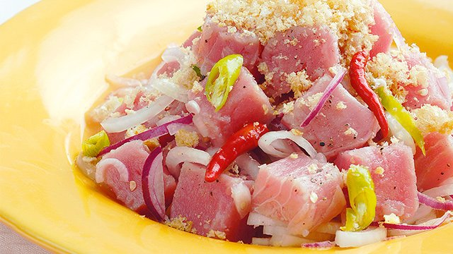
Ingredients:
a. 1 lb fresh tuna, cubed
b. 1/2 cup vinegar
c. 1 medium onion, chopped
d. 2 thumb-sized ginger, minced
...
Kinilaw na TunaSee Recipe
Fresh tuna marinated in vinegar, calamansi, and spices with a tangy, zesty flavor.
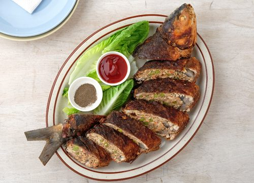
Ingredients:
a. 1 medium milkfish (bangus)
b. 1 medium onion, chopped
c. 2 cloves garlic, minced
d. 1 carrot, diced
...
Rellenong BangusSee Recipe
Stuffed milkfish with a savory filling of garlic, onions, tomatoes, and vegetables, then fried to crispy perfection.
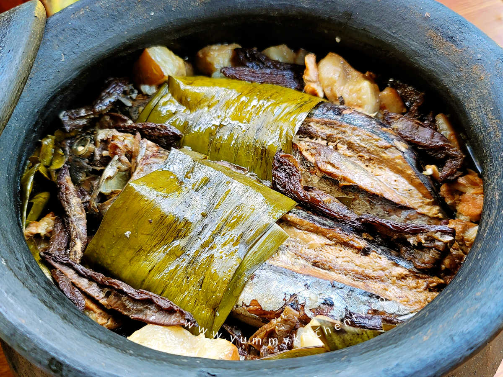
Ingredients:
a. 2 medium mackerel tuna (tulingan)
b. 1 cup dried kamias
c. 1/2 cup pork fat, sliced
d. 4 cups water
...
Sinaing na TulinganSee Recipe
Slow-cooked bullet tuna simmered in tangy tamarind and salty dried kamias.

Ingredients:
a. 1 lb shrimp
b. 8 cups water
c. 1 medium tomato, quartered
d. 1 medium onion, quartered
...
Sinigang na HiponSee Recipe
Tangy shrimp soup with tamarind broth and assorted vegetables.